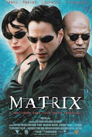
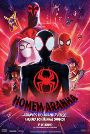

Top 1
Interestelar

A combinação de teorias científicas complexas com uma trama profundamente humana sobre amor e sacrifício me toca de maneira única. A visualização do espaço e do tempo é de tirar o fôlego, e a relação entre pai e filha é uma das mais comoventes que já vi.
Top 2
Os 12 Macacos

Um filme que explora a fragilidade da mente humana em meio ao caos do tempo e da realidade. A tensão psicológica, a atuação de Bruce Willis e a visão distópica são simplesmente fascinantes, criando um cenário imprevisível e cheio de reviravoltas.
Top 3
Matrix
A ideia de que a realidade que percebemos pode ser uma ilusão me desafiou profundamente. A ação inovadora e as questões filosóficas sobre liberdade e controle fazem de Matrix um marco não só para o gênero, mas para o cinema como um todo.
Top 4
Homem-Aranha: Através do Aranhaverso
A animação é um espetáculo visual, e a forma como aborda a jornada de identidade do Miles Morales, com suas lutas pessoais e responsabilidades, é algo incrivelmente relevante e emocionante. A diversidade de aranhas é um toque genial!
Top 5
Forrest Gump: O Contador de Histórias

A maneira simples e sincera como Forrest navega pelos altos e baixos da vida, tocando momentos históricos com sua pureza de coração, me faz refletir sobre a importância de nossas escolhas e o impacto que podemos ter sem perceber.